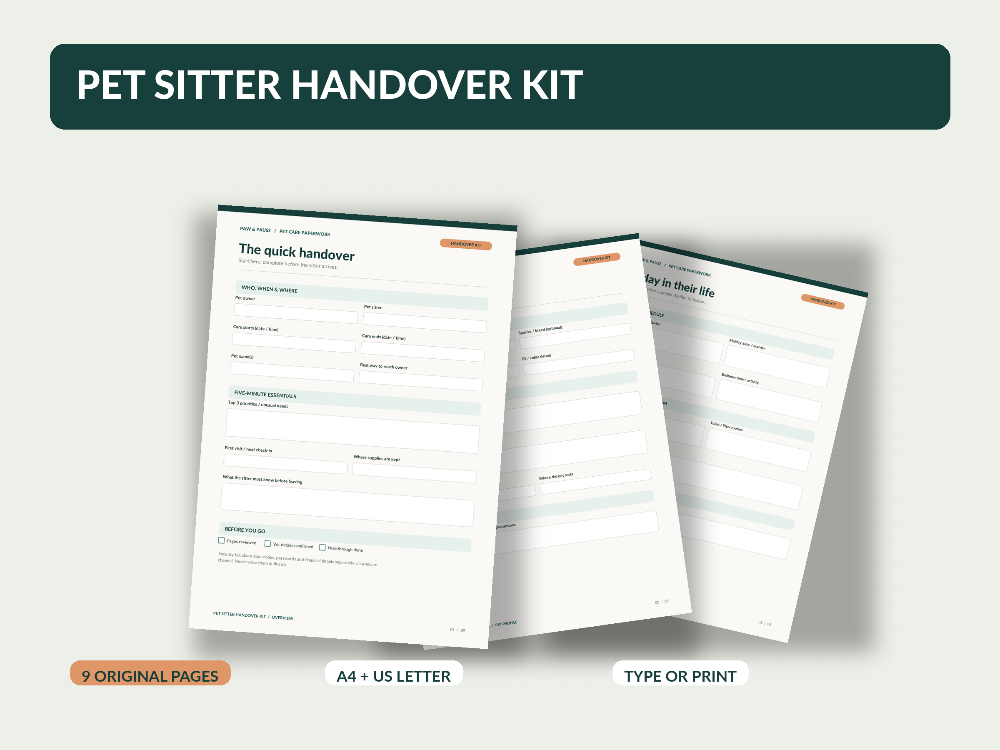
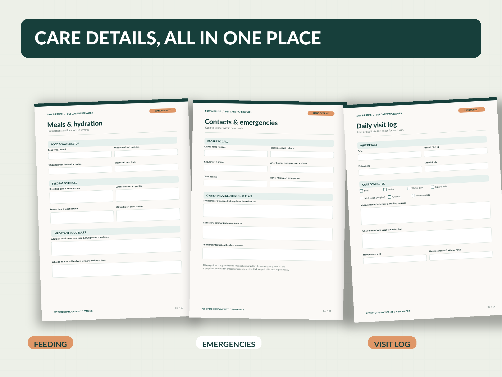

Everything in one spot
Keep routine, food, care notes, contacts and daily visit updates together in nine clearly organized pages.
DIGITAL PET-CARE ESSENTIALS · 001
Meet the Pet Sitter Handover Kit: a thoughtful way to put your pet's routine, little quirks and important details in one place before you head out.
Concept only — no checkout, download or payment on this page.

THE LITTLE THINGS ADD UP
From dinner portions to favourite hiding spots, give your sitter a guide they can actually use — without the last-minute message scramble.
Keep routine, food, care notes, contacts and daily visit updates together in nine clearly organized pages.
Type into PDF form fields using a compatible PDF reader, or print blank pages and fill them in by hand.
Use the visit log and return-home handover pages to capture what happened while you were away.
NINE PAGES. ONE THOUGHTFUL SYSTEM.
Real pages from the original kit, organized in the order a pet sitter needs them.
See the actual page mockupsTAKE A CLOSER LOOK
These are mockups of the actual kit PDF pages, not a physical product or an editable website template.

SIMPLE BY DESIGN
Two paper sizes. The same nine page layouts. A PDF-based workflow that fits how you prefer to prepare.
Pick A4 or US Letter. Both versions include the same nine designs.
Enter details in a compatible desktop PDF reader, or print and write by hand.
Share completed care notes privately with your trusted sitter. Keep passwords and entry codes separate.
GOOD TO KNOW
No. This page is an unpublished concept preview. There is no store, price, checkout or download link here.
Two fillable and printable PDF versions — nine pages in A4 and the same nine pages in US Letter — plus a short buyer guide. These are nine unique page designs, not eighteen.
Both. The PDFs contain interactive form fields, and the pages are also designed for printing. Saving completed form fields varies by device and PDF reader; a compatible desktop reader is recommended.
Yes. The pet profile can be repeated, and additional blank copies of pages can be printed for other pets, repeat visits or care tasks. Save separate digital copies to keep form entries independent.
No. It is a blank organizer for recording instructions supplied by the pet owner or a veterinarian. It is not medical advice or authorization for treatment.
No. This concept page has no forms, ZOXAAR analytics, cookies, external scripts or customer-data collection. The website host may process routine access logs under its own privacy terms.
COMING LATER · CONCEPT ONLY
Thoughtful pet-care paperwork for a handover that feels organized from the start.
No transactions or sign-up are available in this preview.
Back to top ↑